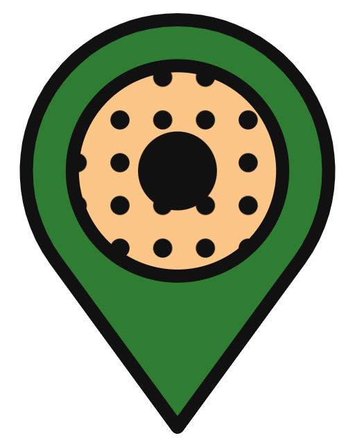
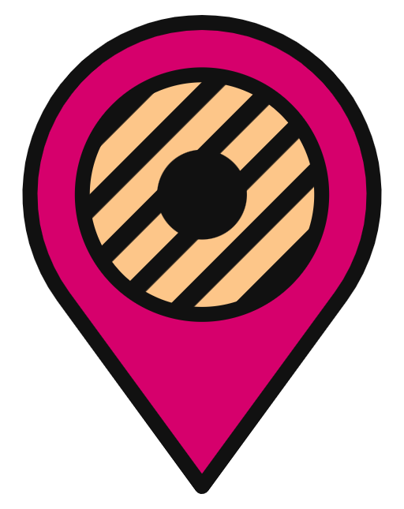
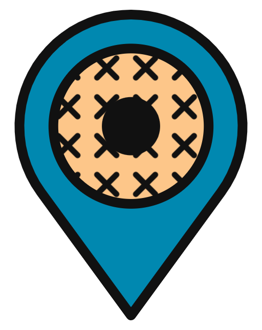
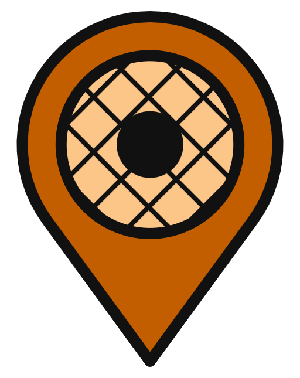

Placeholder. A short paragraph about what these maps cover, how they were put together, and how to use them goes here. Local donut spots within 60 miles of the Raleigh State Capitol Building, sorted into 5 categories and tagged by what they make.
Placeholder. A sentence or two about the map itself — what the pins mean and how to open it in Google Maps.

Novelty
Gourmet
Gluten-Friendly
Vegan63 donut spots
No donut spots match those filters. Try clearing the search or unchecking some tags.
29 spots
2714 Sunset Ave, Rocky Mount, NC 27804
WebsiteAnne’s Donuts was founded in 1952. It’s known for its donuts, brownies, cookies, custom cakes and other specialty goods.
1307 Buck Jones Rd, Raleigh, NC 27606
No websiteSo old school, they don’t need a website. A local favorite, these family-owned and operated shops carry an assortment of yeast donuts, cake donuts, filled donuts, apple fritters, bear claws, and buttermilk bars. The apple fritters are not to be missed.
6320 Capital Blvd #123, Raleigh, NC 27616
No websiteSo old school, they don’t need a website. A local favorite, these family-owned and operated shops carry an assortment of yeast donuts, cake donuts, filled donuts, apple fritters, bear claws, and buttermilk bars. The apple fritters are not to be missed.
3825 S Roxboro St Unit 150, Durham, NC 27713
No websiteSo old school, they don’t need a website. A local favorite, these family-owned and operated shops carry an assortment of yeast donuts, cake donuts, filled donuts, apple fritters, bear claws, and buttermilk bars. The apple fritters are not to be missed.
1232 W Williams St, Apex, NC 27502
No websiteSo old school, they don’t need a website. A local favorite, these family-owned and operated shops carry an assortment of yeast donuts, cake donuts, filled donuts, apple fritters, bear claws, and buttermilk bars. The apple fritters are not to be missed.
5400 S Miami Blvd, Durham, NC 27703
WebsiteThis donut shop has an assortment of raised and cake doughnuts as well as some cinnamon bun style doughnuts in fun and cute shapes.
1067 S Main St, Graham, NC 27253
WebsiteThis local doughnut shop was named the best bakery in the area by Buzzfeed via Yelp reviews in 2018 and it was named one of the Top 10 Local Donut Shops by Money Magazine in 2019.
7550 Creedmoor Rd #101, Raleigh, NC 27613
WebsiteOriginally a chain from Tulsa, Oklahoma, this Daylight Donuts in North Raleigh has been locally owned and operated in the Triangle since the 1990s. It carries a wide assortment of doughnuts in loads of flavors as well as coffee and a few other delightful confections. All of their products are Peanut-Free and Nut-Free.
106 Bratton Dr ste 3, Garner, NC 27529
WebsiteThis shop carries an assortment of yeast raised and cake donuts alongside donut-style cinnamon rolls, bear claws, apple fritters, and more. They also offer espresso drinks alongside their donut flavor combos and breakfast sandwiches.
2816 Erwin Rd #101, Durham, NC 27705
WebsiteThis popular spot near Duke University’s campus is known for their large and fluffy doughnuts. They carry an assortment of yeast raised and cake doughnuts alongside other traditional doughnut shop treats like fritters, cinnamon rolls, bear claws, and more. This shop also offers coffee and breakfast sandwiches.
1040 Forestville Rd Ste 132, Wake Forest, NC 27587
WebsiteThis mom & pop style shop is known for their large and fluffy doughnuts that come in an assortment of flavors.
549 N Person St, Raleigh, NC 27604
WebsiteThis Krispy Kreme has a serious history in the Triangle. Krispy Kreme’s origin story starts in Winston-Salem, NC, but this little shop in Raleigh has been open since the 1970s in Raleigh’s Historic Oakwood Neighborhood. If the Hot Donut sign is on, you have to stop to get one. Those are the rules.
3260 S Church St, Burlington, NC 27215
No websiteThese shops carry an assortment of raised and cake doughnuts, as well as coffee. There are two locations, one in Burlington and one in Mebane.
126 Millstead Dr, Mebane, NC 27302
No websiteThese shops carry an assortment of raised and cake doughnuts, as well as coffee. There are two locations, one in Burlington and one in Mebane.
525 Tarboro St SW, Wilson, NC 27893
WebsiteReviews tell us that this local shop is known for their friendly customer service and golden glazed doughnuts. The Wilson Doughnut Shop has an assortment of yeast-raised doughnuts, cake doughnuts, cream puffs, breakfast items, and more.
107 Vance St, Clinton, NC 28328
WebsiteThis bakery has all sorts of baked goods, but is known for their croissant-shaped doughnuts (doughnut dough rolled in the shape of a croissant). They got their start in Elizabethtown, NC, and have several locations in North Carolina.
4500 Falls of Neuse Rd #100, Raleigh, NC 27609
WebsiteThis bakery has all sorts of baked goods, but is known for their croissant-shaped doughnuts (doughnut dough rolled in the shape of a croissant). They got their start in Elizabethtown, NC, and have several locations in North Carolina.
517 Outlet Center Dr, Smithfield, NC 27577
WebsiteThis bakery has all sorts of baked goods, but is known for their croissant-shaped doughnuts (doughnut dough rolled in the shape of a croissant). They got their start in Elizabethtown, NC, and have several locations in North Carolina.
121 E H St, Erwin, NC 28339
WebsiteThis bakery has all sorts of baked goods, but is known for their croissant-shaped doughnuts (doughnut dough rolled in the shape of a croissant). They got their start in Elizabethtown, NC, and have several locations in North Carolina.
312 E Main St, Clayton, NC 27520
WebsiteThis bakery has all sorts of baked goods, but is known for their croissant-shaped doughnuts (doughnut dough rolled in the shape of a croissant). They got their start in Elizabethtown, NC, and have several locations in North Carolina.
3319-B Raeford Rd, Fayetteville, NC 28303
WebsiteThis bakery has all sorts of baked goods, but is known for their croissant-shaped doughnuts (doughnut dough rolled in the shape of a croissant). They got their start in Elizabethtown, NC, and have several locations in North Carolina.
720 S Church St, Burlington, NC 27215
WebsiteA pastry shop known for their fresh donuts, pastries, cookies & Cakes in Burlington. They’ve been serving up sweet treats since 1942 and have a convenient drive thru window.
225 Wicker St, Sanford, NC 27330
WebsiteA locally owned bakery in Sanford featuring made from scratch muffins, cupcakes, novelties, and a wide assortment of donuts in their pastry case. The staff is friendly and the shop is well stocked, but expect to wait a bit in line if you get there at peak donut hours.
122 N Wilson Ave, Dunn, NC 28334
WebsiteA cafe and bakery in Dunn that was opened in 1967. It has some breakfast and lunch items, as well as several kinds of doughnuts, fritters, pies, cakes, and more.
2433 Hope Mills Rd, Fayetteville, NC 28304
WebsiteThis low-key bakery in Fayetteville with house-made doughnuts has been family owned and operated since 1956.
301 Raleigh St, Newton Grove, NC 28366
WebsiteThe Farm House Cafe & Bakery describes itself as, a family owned and operated restaurant that specialize in country breakfast and lunch. A photo on google from May of 2025 shows a box of yeast raised, glazed donuts.
808 S Bickett Blvd, Louisburg, NC 27549
WebsiteThe Donut Shoppe is a Mom & Pop style shop with yeast raised and cake donuts, including popular options like blueberry cake and cream-filled.
25A Old Durham Rd, Roxboro, NC 27573
WebsiteThis bakery offers a wide range of desserts, including vegan and gluten-free options. The donuts do not appear to be gluten-free or vegan.
2704 Graves Dr, Goldsboro, NC 27534
WebsiteMickey's Pastry Shop has been up and running for over 75 years. They sell donuts, pies, cakes, and coffee.
16 spots
2826 Teachey Pl., Apex, NC 27523
WebsitePeace Love & Little Donuts of Apex make small cake donuts in an assortment of flavors. They offer gluten-friendly donuts, but only on certain days and via preorder. We’ve only seen details for the Gluten-Friendly preorders posted to the Gluten Free Gang of Raleigh Facebook group.
128 S Fuquay Ave, Fuquay-Varina, NC 27526
WebsiteThis popular coffee shop in Fuquay Varina has doughnuts available in their pastry case, which they source from their friends at Baker’s Dozen.
12102 Bradford Green Square, Cary, NC 27513
WebsiteA tea café in Cary that offers some sweet house-made pastries in the form of Mochi Donuts and Cream Puffs. They're currently being rotated on the menu and appear to only be available on weekends.
2033-2011 Chapel Hill Rd, Durham, NC 27707
WebsiteThis cute coffee shop has made-to-order churros available daily. There are 3 Cocoa Cinnamon’s in Durham, the one that serves churros is located on Chapel Hill Road (not to be confused with Chapel Hill the City) and says Cacao Canela on the outside..
203 E Chatham St, Cary, NC 27511
WebsiteA bagel shop in downtown Cary that offers an assortment of bagel sandwiches, schmears, and coffee. They also bake their own donuts, called b’donuts, which are made from a buttermilk vanilla batter and served covered in powdered sugar. They’re perfect for dipping in coffee and are offered as a regular item on the menu. Big Dom’s has been known to dabble in other kinds of doughnuts—yeast raised baked, fritters, etc.—following them on Instagram is your best shot at finding out when they’ll be offering more doughnut-related treats.
664 West St, Pittsboro, NC 27312
WebsiteA locally owned bakery in Pittsboro that aims to source as many local, organic, non GMO, and whole ingredients as possible. They make small batches of all sorts of confections daily, which includes a small collection of donuts. What’s most striking about their doughnuts is that they’re all baked, not fried, but some are still yeast raised. It’s the only case of raised baked donuts that we know of regularly offered in this region.
257 NC-210, Smithfield, NC 27577
WebsiteThis ice cream shop offers homemade ice cream, sundaes, alongside mini donuts and other baked goods.
8926 Cleveland Rd, Clayton, NC 27520
WebsiteThis ice cream shop offers homemade ice cream, sundaes, alongside mini donuts and other baked goods.
2261 New Hope Church Rd, Raleigh, NC 27604
WebsiteThis cute and fun little coffee shop in North Raleigh offers an assortment of made-to-order churros along with pan dulces, espresso drinks, aguas frescas, and waffles.
506 Parks Crossroads Church Rd, Ramseur, NC 27316
WebsiteThis orchard started by offering apple cider mini-donuts as part of their seasonal Fall menu. They gained popularity and are now offered in various seasonal flavors on weekends throughout most of the year.
7705 Lead Mine Rd, Raleigh, NC 27615
WebsiteA family owned coffee shop in North Raleigh that opened its doors in 2012. They offer breakfast and lunch items and feature made-to-order mini donuts on their menu.
122 W King St, Hillsborough, NC 27278
WebsiteFrom the folks that brought you Kasturi, Tan-Durm and Viceroy, comes The Nomad, an international street food-inspired eatery. On their dessert menu you'll find Bomboloni, house made fried Italian doughnuts with vanilla cream custard.
Yee Haw Doughnuts, Carrborro, NC
WebsiteYee Haw Doughnuts is a regular at the Carrboro Farmers Market. They make sweet potato cake doughnuts with an assortment of toppings. Their social media accounts say that they regularly appear in Saxapahaw, the Greensboro Farmers Curb Market, and other Triangle/Triad events, festivals, and markets and that they accept special orders.
1201 Agriculture St, Raleigh, NC 27603
WebsiteKiKitoko Bites are vegan or plant-based gluten free donuts that are made with yuca or cassava. They strive to offer our customers all(strict) vegan and gluten free and "free of myriads of allergies".
504 N McPherson Church Rd, Fayetteville, NC 28303
WebsiteChillz Intergalactic Donuts is a food truck that that offers made to order mini-donuts with an assortment of toppings.
1141 Falls River Ave Ste 124, Raleigh, NC 27614
WebsiteOh Mochi! offers a combination of Mochi Donuts, Korean Corndogs, Boba Tea, and Ice Cream.
12 spots
1501 Sunrise Ave Ste 180, Raleigh, NC 27608
WebsiteThe teams behind Boulted Bread, Jubala Coffee, and Benchwarmers Bagels are at it again with Bright Spot Donuts. This small shop has yeast raised donuts in an assortment of seasonal flavors.
2820 Capital Blvd, Raleigh, NC 27604
WebsiteTepuy Donuts makes handcrafted sourdough donuts and other baked goods. Their cafe offers coffee (hot and iced, but no espresso), tea, matcha, and hot chocolate. Their featured donut flavors rotate seasonally.
1002 9th St, Durham, NC 27705
WebsiteMonuts got their start as a little donut stand at the Durham Farmers Market in 2011 and have since evolved into a counter-service restaurant and bakery with a variety of breakfast and lunch options. Despite their growth, they’re still most known for well-loved house-made doughnuts.
1201 Agriculture St, Raleigh, NC 27603
WebsiteBakery Story is a family-owned Asian bakery started by Korean Americans, built on sharing comfort, culture, and homemade pastries. They offer a mix of savory and sweet pastries, from kimchi croquettes and bulgogi mozzarella buns to cream-filled donuts and seasonal favorites. They’ve created signature items like the Logie Donut (named after their mom) and continue to add new recipes inspired by our community.
2116-H New Bern Ave, Raleigh, NC 27610
WebsiteThe Blue Ox Bakery is a pop-up and wholesale bakery in the Raleigh area. They have a wide array pastries including croissants, cinnamon buns, crullers, donuts, cookies, brownies, and specialty seasonal pastries. They take special orders and can cater private events. They usually have hot donut pop ups in the Fall, Winter, and early Spring. Gluten-friendly crullers are not regularly available, but they can be custom ordered.
1881 Lake Pine Dr, Cary, NC 27511
WebsiteThis pastry shop makes fresh bomboloni everyday alongside a large assortment of pastries and delicacies.
911 N West St Ste 107, Raleigh, NC 27603
WebsiteThis pastry shop makes fresh bomboloni everyday alongside a large assortment of pastries and delicacies.
2010 S Main St #404, Wake Forest, NC 27587
WebsiteThis pastry shop makes fresh bomboloni everyday alongside a large assortment of pastries and delicacies.
300 W Ballentine St, Holly Springs, NC 27540
WebsiteAnn’s Bakeshop is a regular at the Holly Springs Farmers Market. They offer a wide assortment of baked goods like bread, cakes, cookies, muffins, pies, and even some Keto and Gluten-free options. Among their selection is cake doughnuts in a few different flavors. You can pre-order to have a batch ready for a Saturday pick up at the Holly Springs Farmers Market.
2706 Durham-Chapel Hill Blvd, Durham, NC 27707
WebsiteGuglhupf describes itself as "...serv[ing] contemporary cuisine with a nod to its southern German roots..." They focus on seasonal ingredients and have Berliners (Jelly Donuts) on Saturdays.
2603 Glenwood Ave #123, Raleigh, NC 27608
WebsiteA bake shop in Glenwood Village shopping Center that makes their own croissants, muffins, scones, and other treats. They regularly have a fried croissant style doughnut (croissant dough in the shape of a doughnut) on their menu called a “French Donut.”
111 N Churton St, Hillsborough, NC 27278
WebsiteThis new addition is right next door to the Wooden Nickel Pub in the Historic James Pharmacy building in Hillsborough. They currently offer cakes, pies, cookies, yeast based cinnamon apple fritters, old fashioned sour cream donuts and more. The WNP Bake Shop is only open on Saturdays, Sundays, and Mondays.
7 spots
2826 Teachey Pl., Apex, NC 27523
WebsitePeace Love & Little Donuts of Apex make small cake donuts in an assortment of flavors. They offer gluten-friendly donuts, but only on certain days and via preorder. We’ve only seen details for the Gluten-Friendly preorders posted to the Gluten Free Gang of Raleigh Facebook group.
410 S White St, Wake Forest, NC 27587
WebsiteA vegan bakery and dessert bar run by a vegan duo that launched in 2020. They’re known for their assortment of cake doughnuts, cupcakes, muffins, cookies, and more. Not only do they bake without any animal products, but they also have gluten-free options regularly on their menu as well.
7400 Six Forks Rd #7, Raleigh, NC 27615
WebsiteLevant Bistro offers up Levantine Cuisine, fresh Baked Pastries, all of which are organic and Gluten Free. They appear to have donuts on rotation.
6150 Rogers Rd, Rolesville, NC 27571
WebsiteSweetheart Treats says their bakery is a space where every dessert and/or treat is customizable to suit dietary restrictions. Gluten-free fried donuts appear to be available on some Fridays throughout the month.
2310 Bale St Ste 104, Raleigh, NC 27608
WebsiteJP's pastries can be found in many spots around the Triangle. They're known for their gluten-free bakery offering vegan options and baked breads, cookies and pastries. They've been known to have donuts on occassion and usually announce it on their social media.
7072 NC-751 #108, Durham, NC 27707
WebsiteJP's pastries can be found in many spots around the Triangle. They're known for their gluten-free bakery offering vegan options and baked breads, cookies and pastries. They've been known to have donuts on occassion and usually announce it on their social media.
111 S Railroad St, Benson, NC 27504
WebsiteJP's pastries can be found in many spots around the Triangle. They're known for their gluten-free bakery offering vegan options and baked breads, cookies and pastries. They've been known to have donuts on occassion and usually announce it on their social media.
4 spots
410 S White St, Wake Forest, NC 27587
WebsiteA vegan bakery and dessert bar run by a vegan duo that launched in 2020. They’re known for their assortment of cake doughnuts, cupcakes, muffins, cookies, and more. Not only do they bake without any animal products, but they also have gluten-free options regularly on their menu as well.
2310 Bale St Ste 104, Raleigh, NC 27608
WebsiteJP's pastries can be found in many spots around the Triangle. They're known for their gluten-free bakery offering vegan options and baked breads, cookies and pastries. They've been known to have donuts on occassion and usually announce it on their social media.
7072 NC-751 #108, Durham, NC 27707
WebsiteJP's pastries can be found in many spots around the Triangle. They're known for their gluten-free bakery offering vegan options and baked breads, cookies and pastries. They've been known to have donuts on occassion and usually announce it on their social media.
111 S Railroad St, Benson, NC 27504
WebsiteJP's pastries can be found in many spots around the Triangle. They're known for their gluten-free bakery offering vegan options and baked breads, cookies and pastries. They've been known to have donuts on occassion and usually announce it on their social media.